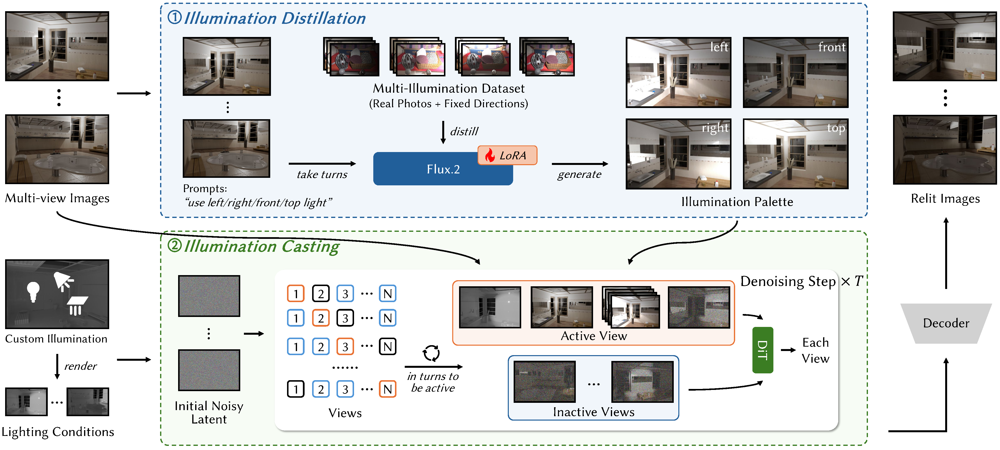
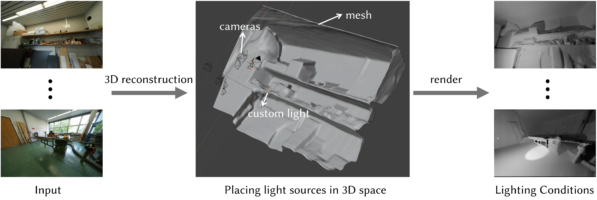
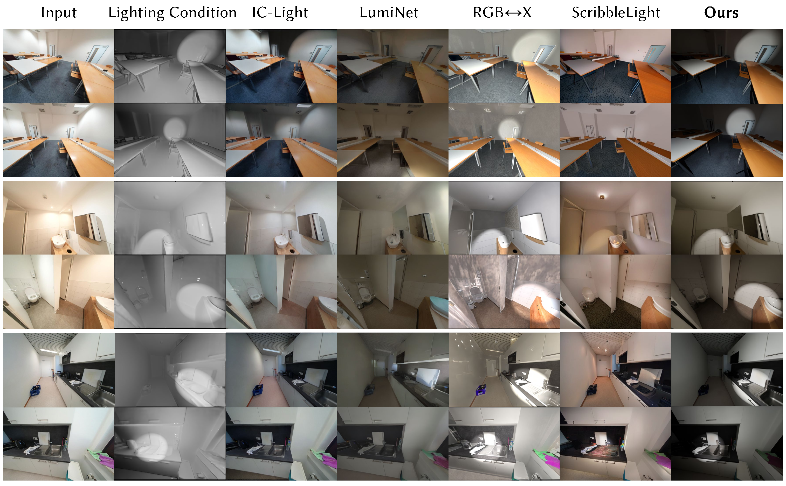

Indoor scene relighting demands photorealism, precise spatial control, and strict multi-view consistency. While diffusion-based image editing models enable semantic lighting manipulation via text prompts, enforcing exact 3D light placement often disrupts their generative priors.
We propose Lume-Palette, a progressive framework that leverages semantic lighting priors for spatially controllable multi-view indoor relighting. The approach decouples relighting into two stages: illumination distillation, which extracts canonical illumination palettes from a pretrained diffusion model to preserve realistic material-light interactions, and illumination casting, which explicitly maps target spatial lighting conditions defined from coarse 3D geometry.
To efficiently handle dense multi-view and multi-modal inputs, we introduce an asymmetric multi-view conditioning strategy that selectively injects essential spatial context. Experiments on diverse synthetic scenes and real-world scenes demonstrate that Lume-Palette produces photorealistic, spatially controllable, and multi-view consistent relighting results.

Lume-Palette decouples indoor relighting into illumination distillation and illumination casting. The distillation stage extracts canonical illumination palettes that capture intrinsic material responses. The casting stage combines these palettes with source images and user-defined spatial lighting conditions, while asymmetric multi-view conditioning keeps generation scalable and consistent.

Users can place point, spot, or area lights in a coarse 3D reconstruction. We render view-specific lighting maps on a white 3D model, giving the relighting model explicit and 3D-consistent spatial guidance instead of relying on text-only lighting control.
Lume-Palette robustly synthesizes realistic shading that adheres to imposed spatial lighting conditions on real indoor scenes. Compared with text-only or decomposition-based relighting baselines, our method better preserves scene appearance while producing spatially varying illumination effects.

Since ground-truth relighting is unavailable for real scenes, the paper evaluates perceptual quality using a user study. Lume-Palette is consistently preferred for realism, lighting adherence, and multi-view consistency.
@inproceedings{gao2026lumepalette,
title = {Decoupled Illumination Priors for Spatially Controllable Multi-View Indoor Scene Relighting},
author = {Gao, Chenjian and Xu, Linning and Xue, Tianfan},
booktitle = {European Conference on Computer Vision (ECCV)},
year = {2026}
}